#Cargamos el dataset que se va a utilizar
df = readxl::read_xlsx('receptivo.xlsx')Trabajo final
EL TURISMO RECEPTIVO EN URUGUAY
El trabajo a continuación trata acerca de un análisis exploratorio de datos en el que se pretende investigar sobre el Turismo Receptivo en Uruguay durante 2016 al 2024. El conjunto de datos fue abstraído del Catálogo Nacional de Datos Abiertos de Uruguay. De acuerdo con la fuente mencionada, los mismos fueron obtenidos a través de una encuesta de Turismo Receptivo y contiene la información desagregada acerca de los visitantes y el gasto de los mismos referente a cada trimestre desde el año 2016 hasta el 2024.
Al momento de elegir el conjunto de datos que se iba a utilizar el grupo decidió que podía ser pertinente investigar acerca del Turismo Receptivo en Uruguay dado que es un factor de gran incidencia en el PBI en el país y porque, además de que es un tema atractivo y de interés personal, puede ser útil a nivel económico.
En la misma línea, al realizar un análisis exploratorio de estos datos, se puede obtener información acerca del flujo de visitantes ingresados al país, de dónde provienen, cuál es el motivo del viaje, cuál es el destino de preferencia de la mayoría, el tipo de alojamiento de la estadía y la principal fuente de gasto de los turistas entre otros aspectos.
El análisis a continuación se desarrollará mediante técnicas de análisis exploratorio de datos. En primer lugar se realizará una descripción del conunto de datos, examinando la fuente, el tipo de variables que se utilizarán, la cantidad de observaciones y la presencia de datos faltantes. En segundo lugar, se aplicarán medidas de resumen para las variables numéricas, tales como media, mediana, desviación estandar, el rango intercuartílico y los percentiles. En tercer lugar, para las variables categóricas se analizarán las frecuencias relativas y absolutas. Por su parte, también se realizarán visualizaciones gráficas como histogramas, gráficos de barra y de dispersión para explorar la distribución de las variables y relaciones entre ellas.
Exploración del conjunto de datos
Una vez presentado el fenómeno de interés, su relevancia y una breve descripción de los métodos que se aplicarán, pasaremos a realizar una exploración inicial del conjunto de datos con el objetivo de conocer su estructura. Para ello debemos cargar el dataset que se va a utilizar y guardarlo en un objeto que llamaremos df utilizando la función readxl.
Una vez cargado el dataset se debe analizar su estructura es decir, cantidad de observaciones, columnas, tipo de variables: categóricas o numéricas. Para ello utilizaremos la función glimpse. Pero antes, se deberán cargar las librerías que vamos a utilizar.
#Cargamos las librerías
library(tidyverse) Warning: package 'tidyverse' was built under R version 4.6.1── Attaching core tidyverse packages ──────────────────────── tidyverse 2.0.0 ──
✔ dplyr 1.2.1 ✔ readr 2.2.0
✔ forcats 1.0.1 ✔ stringr 1.6.0
✔ ggplot2 4.0.3 ✔ tibble 3.3.1
✔ lubridate 1.9.5 ✔ tidyr 1.3.2
✔ purrr 1.2.2
── Conflicts ────────────────────────────────────────── tidyverse_conflicts() ──
✖ dplyr::filter() masks stats::filter()
✖ dplyr::lag() masks stats::lag()
ℹ Use the conflicted package (<http://conflicted.r-lib.org/>) to force all conflicts to become errorslibrary(lubridate) #Estructura del df
df |> glimpse()Rows: 65,333
Columns: 48
$ IdIngresos <dbl> 3, 18, 3, 7, 7, 2, 3, 1, 1, 4, 1…
$ `Lugar Ingreso` <chr> "Aeropuerto de Carrasco", "Río B…
$ IdTranspIngreso <dbl> 1, 2, 1, 2, 2, 5, 1, 5, 5, 2, 5,…
$ `Transporte Internacional de Ingreso` <chr> "Aereo", "Terrestre Auto", "Aere…
$ FechaIngreso <dttm> 2017-02-22, 2017-01-05, 2017-01…
$ IdFecIng <dbl> 13567, 13519, 13518, 13532, 1351…
$ FechaEgreso <dttm> 2017-03-03, 2017-01-09, 2017-01…
$ IdFecEgr <dbl> 13576, 13523, 13526, 13540, 1353…
$ IdNacionalidad <dbl> 33, 19, 30, 30, 10, 59, 32, 19, …
$ Pais <chr> "Ecuador", "Brasil", "Paraguay",…
$ IdResidencia <dbl> 50, 23, 30, 30, 11, 80, 50, 26, …
$ Residencia <chr> "Otras ciudades Sudamerica", "Sa…
$ IdMotivo <dbl> 99, 1, 1, 1, 1, 1, 1, 1, 1, 1, 1…
$ Motivo <chr> "Otros", "Ocio y vacaciones", "O…
$ IdOcupacion <dbl> 20, 12, 13, 11, 13, 13, 11, 13, …
$ Ocupacion <chr> "Deportista, Entrenador, Juez De…
$ IsEstudio <dbl> 4, 6, 6, 4, 6, 6, 4, 6, 5, 6, 6,…
$ Estudio <chr> "Secundaria completa", "Terciari…
$ IdDestinoLocalidad <dbl> 1, 3, 3, 3, 3, 3, 3, 3, 3, 3, 3,…
$ Localidad <chr> "Montevideo", "Punta del Este", …
$ IdDepartamentoDestino <dbl> 1, 2, 2, 2, 2, 2, 2, 2, 2, 2, 2,…
$ Departamento <chr> "Montevideo", "Maldonado", "Mald…
$ IdOtroDepartamento <dbl> 0, 1, 1, 1, 1, 1, 1, 1, 1, 1, 1,…
$ `Otro Departamento` <chr> "Canelones", "Montevideo", "Mont…
$ IdOtraLocalidad <dbl> 0, 0, 0, 0, 0, 0, 0, 0, 0, 0, 0,…
$ `Otra Localidad` <chr> "Parador Tajes", "Montevideo", "…
$ IdAlojamiento <dbl> 23, 24, 24, 23, 23, 23, 21, 24, …
$ Alojamiento <chr> "Hotel 3 estrellas", "Hotel 4 es…
$ IdTranspLocal <dbl> 6, 1, 3, 1, 1, 3, 6, 1, 1, 1, 1,…
$ TransporteLocal <chr> "Otros", "Auto propio", "Taxi - …
$ IdEgresos <dbl> 3, 18, 3, 7, 7, 2, 3, 4, 7, 4, 1…
$ `Lugar Egreso` <chr> "Aeropuerto de Carrasco", "Río B…
$ IdTranspEgreso <dbl> 1, 2, 1, 2, 2, 5, 1, 2, 2, 2, 5,…
$ `Transporte Internacional de Egreso` <chr> "Aereo", "Terrestre Auto", "Aere…
$ IdDestino <dbl> 3, 1, 1, 1, 1, 1, 1, 1, 1, 1, 1,…
$ Destino <chr> "Montevideo", "Punta del Este", …
$ Estadia <dbl> 9, 4, 8, 8, 15, 2, 7, 2, 6, 4, 5…
$ Gente <dbl> 3, 2, 2, 3, 2, 2, 2, 2, 2, 3, 2,…
$ GastoTotal <dbl> 3213.00, 2016.00, 3846.00, 3696.…
$ GastoAlojamiento <dbl> 1566.00, 784.00, 1568.00, 2352.0…
$ GastoAlimentacion <dbl> 1134, 376, 752, 1128, 1410, 104,…
$ GastoTransporte <dbl> 0.0, 72.0, 160.0, 216.0, 270.0, …
$ GastoCultural <dbl> 0, 384, 0, 0, 0, 0, 0, 0, 384, 0…
$ GastoTours <dbl> 0, 0, 0, 0, 0, 0, 0, 0, 0, 0, 0,…
$ GastoCompras <dbl> 0, 0, 566, 0, 566, 0, 566, 0, 0,…
$ GastoOtros <dbl> 513, 400, 800, 0, 1500, 12, 0, 0…
$ Coef <dbl> 129.35, 57.49, 63.94, 53.25, 142…
$ CoefTot <dbl> 388.04, 114.98, 127.89, 159.76, …Al examinar la estructura, se visualiza un total de 65.333 observaciones y 48 variables. Es de interés conocer esas 48 variables, y saber cuáles son variables categóricas y cuáles numéricas. Utilizamos la función sapply dado que permite conocer el nombre de las variables y cuáles son consideradas categóricas y cuáles numericas.
#Variables categóricas y variables numéricas
sapply(df, class)$IdIngresos
[1] "numeric"
$`Lugar Ingreso`
[1] "character"
$IdTranspIngreso
[1] "numeric"
$`Transporte Internacional de Ingreso`
[1] "character"
$FechaIngreso
[1] "POSIXct" "POSIXt"
$IdFecIng
[1] "numeric"
$FechaEgreso
[1] "POSIXct" "POSIXt"
$IdFecEgr
[1] "numeric"
$IdNacionalidad
[1] "numeric"
$Pais
[1] "character"
$IdResidencia
[1] "numeric"
$Residencia
[1] "character"
$IdMotivo
[1] "numeric"
$Motivo
[1] "character"
$IdOcupacion
[1] "numeric"
$Ocupacion
[1] "character"
$IsEstudio
[1] "numeric"
$Estudio
[1] "character"
$IdDestinoLocalidad
[1] "numeric"
$Localidad
[1] "character"
$IdDepartamentoDestino
[1] "numeric"
$Departamento
[1] "character"
$IdOtroDepartamento
[1] "numeric"
$`Otro Departamento`
[1] "character"
$IdOtraLocalidad
[1] "numeric"
$`Otra Localidad`
[1] "character"
$IdAlojamiento
[1] "numeric"
$Alojamiento
[1] "character"
$IdTranspLocal
[1] "numeric"
$TransporteLocal
[1] "character"
$IdEgresos
[1] "numeric"
$`Lugar Egreso`
[1] "character"
$IdTranspEgreso
[1] "numeric"
$`Transporte Internacional de Egreso`
[1] "character"
$IdDestino
[1] "numeric"
$Destino
[1] "character"
$Estadia
[1] "numeric"
$Gente
[1] "numeric"
$GastoTotal
[1] "numeric"
$GastoAlojamiento
[1] "numeric"
$GastoAlimentacion
[1] "numeric"
$GastoTransporte
[1] "numeric"
$GastoCultural
[1] "numeric"
$GastoTours
[1] "numeric"
$GastoCompras
[1] "numeric"
$GastoOtros
[1] "numeric"
$Coef
[1] "numeric"
$CoefTot
[1] "numeric"A partir de la función glimpse() y del tipo de dato asignado por R, se observa que le conjunto de datos contiene variables de distinta naturaleza. Entre las variables cualitativas se encuentra se encuentran la nacionalidad de quién ingresó, el lugar de residencia, el destino, el departamento y la zona de destino, la ocupación, el nivel educativo, el motivo del viaje, el tipo de alojamiento, el destino y el medio de transporte utilizado (para ingresar, para salir y durante la estadía). Por su parte, entre las variables cuantitativas se encuentran la estadía, la cantidad de personas del grupo encuestado, el gasto total y los distintos componentes del gasto desagregados. Finalmente, también se dispone de variables correspondiente a fechas de ingreso y egreso al país
Con el objetivo de conocer la composición del conjunto de datos, se contabilizó la cantidad de variables según el tipo de dato reconocido por R: ‘numeric’ para variables numéricas, ‘character’ para variables categórica y ‘POSIXct’ ‘POSIXt’ para variables que corresponden a fechas. Para ello, le asignamos un nombre a cada uno de los tres tipos de variables clasificados y usamos la función sum.
data.frame(
Tipo = c('Numéricas', 'Categóricas', 'Fechas'),
Cantidad = c(sum(sapply(df, is.numeric)),
sum(sapply(df, is.character)),
sum(sapply(df, inherits, "POSIXct")) ) ) Tipo Cantidad
1 Numéricas 30
2 Categóricas 16
3 Fechas 2Al observar los datos podemos visualizar que se reconocen 30 variables numéricas, 16 variables categóricas y 2 fechas. Sin embargo, dentro de las variables clasificadas como numéricas, existen varias cuyo nombre comienza con el prefijo ‘Id’ o ‘Is’. Esas variables corresponden a códigos identificadores de categorías y no representan variables cuantitativas de interés para este análisis. Un ejemplo de ello es ‘IdMotivo’ que refiere al código del motivo de ingreso. Por esta razón, se decidió excluirlas del conteo y del análisis exploratorio posterior.
Para ello, crearemos un nuevo data frame: ‘df1’ excluyendo las variable mencionadas utilizando de la función select y start_with para seleccionar todas las variables del dataset excepto las que comienzan con ‘Id’. Una vez teniendo el nuevo dataframe, realizamos el conteo con el mismo.
df1 = df |>
select(-starts_with('Id'), -starts_with('Is'))
data.frame(
Tipo = c('Numéricas', 'Categóricas', 'Fechas'),
Cantidad = c(
sum(sapply(df1, is.numeric)),
sum(sapply(df1, is.character)),
sum(sapply(df1, inherits, "POSIXct"))
) ) Tipo Cantidad
1 Numéricas 12
2 Categóricas 16
3 Fechas 2Finalmente observamos que dentro de las 48 variables inicialmente mencionadas, son de nuestro interés 30. De ellas, 12 corresponden a variables cuantitativas, 16 cualitativas y 2 son variables de fechas.
Luego verificamos la presencia de datos faltantes en las variables del conjunto de datos. Para ello se utilizó summarise() junto con across(), lo que permite aplicar una misma operación a múltiples variables de forma simultánea. Se aplicó la función sum(is..na(.)) a todas las variables mediante el selector everithing(). Es decir, se buscó sumar para cada variable los datos faltantes y así poder corroborar para cada variable cuantos datos faltaban.
#Vetifiacmos presencia de datos faltantes
df1 |>
summarise(across(everything(), ~sum(is.na(.))))# A tibble: 1 × 30
`Lugar Ingreso` Transporte Internacional de I…¹ FechaIngreso FechaEgreso Pais
<int> <int> <int> <int> <int>
1 0 0 0 0 0
# ℹ abbreviated name: ¹`Transporte Internacional de Ingreso`
# ℹ 25 more variables: Residencia <int>, Motivo <int>, Ocupacion <int>,
# Estudio <int>, Localidad <int>, Departamento <int>,
# `Otro Departamento` <int>, `Otra Localidad` <int>, Alojamiento <int>,
# TransporteLocal <int>, `Lugar Egreso` <int>,
# `Transporte Internacional de Egreso` <int>, Destino <int>, Estadia <int>,
# Gente <int>, GastoTotal <int>, GastoAlojamiento <int>, …Es posible afirmar que las variables que presentan datos faltantes son una minoría de cuatro: estudio, localidad, departamento, otro departamento y otra localidad. No obstante,es un buen indicio debido a que para las variables de mayor interés en nuestro análisis exploratorio no incide de forma significativa la falta de estos datos.
Una vez realizado un análisis descriptivo del conjunto de los datos, donde se examinó la cantidad de observaciones y variables, el tipo de variables y la presencia de datos faltantes es posible continuar al análisis exploratorio con resumenes estadísticos y visualizaciones para explorar los datos.
Análisis exploratorio
Como fue meniconado anteriormente, el objetivo de este trabajo es realizar un análisis exploratorio del conjunto de datos correspondiente al Turismo Receptivo en Uruguay. En este contexto, resulta pertinente definir las preguntras que orientarán el análisis. En particular, se busca responder la siguiente pregunta principal: ¿Cuáles son las principales características de los visitantes que ingresan a Uruguay y cuáles son sus destinos de preferencia? Asimismo, ¿en qué rubro realizan los mayores gastos durante su estadía?
En esta línea, resulta pertinente plantear una serie de preguntas secundarias que orienten el análisis exploratorio del conjunto de datos. A continuaión se presentan las preguntas que guiarán el estudio:
- Características generales de los visitantes:
1.1 ¿Cuáles son los principales países o regiones de residencia de los visitantes?
1.2 Considerando la residencia de los visitantes por continente, ¿de qué continente provienen la mayoría de los visitantes?
1.3 ¿En qué meses del año ingresan más turistas? ¿Existen patrones estacionales en el ingreso de turistas?
- Características del viaje:
2.1 ¿Cuál es el principal motivo del viaje?
2.2 ¿Cómo varía el motivo del viaje según el destino elegido?
2.3 ¿Cómo varía el destino elegido según la región de residencia del visitante?
- Estadía
3.1 ¿Cuál es la duración promedio de la estadía?
3.2 ¿La duración de la estadía varía según el destino?
3.3 ¿La duración de la estadía varía según el motivo del viaje?
- Gastos turísticos
4.1 ¿Cuál es el gasto promedio diario de los visitantes?
4.2 ¿Qué rubros concentran la mayor parte del gasto?
4.3 ¿El gasto diario varía según destino o motivo del viaje?
4.4 ¿Cómo evoluciona el gasto diario promedio por trimestre y por año?
1.1 ¿Cuáles son los principales países o regiones de residencia de los visitantes?
La variable Pais corresponde a la nacionalidad de quién ingresó y no necesariamente a su lugar de residencia habitual. Al explorar esta variable se observa que una proporción importante de los visitantes posee nacionalidad uruguaya. Sin embargo, esto no implica que residan en Uruguay, ya que una persona de nacionalidad uruguaya puede vivir en el exterior y ser considerada visitante al ingresar al país. Esto puede observarse mediante una tabla de frecuencias absolutas y relativas de la variable Pais, donde se aprecia que el 15,9% de los visitantes tienen nacionalidad uruguaya.
df1 |>
count(Pais, sort = TRUE) |>
mutate(porcentaje = (n/ sum(n))* 100)# A tibble: 28 × 3
Pais n porcentaje
<chr> <int> <dbl>
1 Argentina 32267 49.4
2 Brasil 12604 19.3
3 Uruguay 10384 15.9
4 Chile 1819 2.78
5 Paraguay 1433 2.19
6 Otro de America 898 1.37
7 EE.UU. 872 1.33
8 España 711 1.09
9 Otro de Europa 672 1.03
10 Peru 517 0.791
# ℹ 18 more rowsDado que el objetivo es analizar el lugar de residencia de los visitantes y no su nacionalidad, se construyó una nueva variable nombrada ‘Pais_residencia’ a partir de la variable Residencia agrupando las ciudades, provincias y estados de acuerdo al país que corresponda. Previo a elllo, se utilizaron los valores únicos de la variable Residencia mediante la función unique, con el fin de identificar las categorías presentes y definir los agrupamientos necesarios.
unique(df1$Residencia) [1] "Otras ciudades Sudamerica" "Santa Catarina"
[3] "Paraguay" "Buenos Aires"
[5] "Europa" "Otra ciudades de Brasil"
[7] "San Pablo" "EEUU - Canada"
[9] "Pcia. Enre Rios" "Chile"
[11] "Rio Grande" "Rosario"
[13] "Otras Pcias. Argentinas" "Cordoba"
[15] "Otros Pcia. Santa Fe" "Otras ciudades America"
[17] "Ciudades de Asia" "Porto Alegre"
[19] "Rio de Janeiro" "Pelotas - Rio Grande"
[21] "Otras Pcia Cordoba" "Sin Datos"
[23] "Ciudades Africa y Oceania" "España"
[25] "Otros Pcia. Bs. As." "Corrientes"
[27] "Colombia" "Alemanai"
[29] "Mexico" "Peru"
[31] "Otros San Pablo" "Reino Unido" Se observó que, mientras la mayoría de las categorías refieren a países o regiones, en los casos de Argentina y Brasil, la información se encuentra desagregada por ciudades, provincias y estados. Por lo tanto, se utilizó la función case_when para agrupar dichs categorías bajo un mismo país. En el resto de los casos se conservó el valor original mediante la condición TRUE ~ Residencia.
Por otra parte, se observa una categoría denominada ‘Sin datos’, por lo tanto converitemos esa variable en na para facilitar el trabajo posterior al filtrar las obervaciones exclyendo los datos faltantes con la función filter(!is.na()).
Sumado a esto, se observó un error tipográfico en el dataset en el país Alemania, el cual fue corregido en esta sección.
#Creamos la varible Pais_residencia
df1 = df1 |>
mutate(
Pais_residencia = case_when(
Residencia %in% c(
'Buenos Aires', 'Rosario', 'Pcia. Enre Rios', 'Otras Pcias. Argentinas', 'Cordoba', 'Otros Pcia. Santa Fe', 'Otras Pcia Cordoba', 'Otros Pcia. Bs. As.', 'Corrientes') ~ 'Argentina',
Residencia %in% c(
'Santa Catarina', 'Otra ciudades de Brasil', 'San Pablo', 'Rio Grande', 'Porto Alegre', 'Rio de Janeiro', 'Pelotas - Rio Grande', 'Otros San Pablo') ~ 'Brasil',
Residencia == 'Alemanai'~ 'Alemania',
Residencia == 'Sin Datos' ~ NA_character_,
TRUE ~ Residencia ))Una vez que fue creada la variable País_residencia, será posible analizar cuáles son los principales países o regiones de residencia de los visitantes a través del comando count. Se creó una nueva columna con el valor expresado en porcentaje para facilitar la visualización.
#Tabla de frecuencia de la variable Pais_residencia
df1 |>
filter(!is.na(Pais_residencia)) |>
count(Pais_residencia, sort = TRUE) |>
mutate(porcentaje = (n/ sum(n)) *100)# A tibble: 16 × 3
Pais_residencia n porcentaje
<chr> <int> <dbl>
1 Argentina 40105 61.4
2 Brasil 14185 21.7
3 Europa 2046 3.13
4 Chile 1963 3.00
5 EEUU - Canada 1632 2.50
6 Paraguay 1628 2.49
7 Otras ciudades America 1549 2.37
8 Otras ciudades Sudamerica 743 1.14
9 Ciudades de Asia 343 0.525
10 España 322 0.493
11 Peru 254 0.389
12 Mexico 176 0.269
13 Colombia 170 0.260
14 Alemania 102 0.156
15 Ciudades Africa y Oceania 63 0.0964
16 Reino Unido 44 0.0674A partir de la nueva variable construída, se observa que aproximadamente el 61% de los visitantes residen en Argentina, seguido por Brasil con alrededor de 21%. En proporciones considerablemente menores aparecen Europa (3,1%) y Chile (3,0%). Estos resultados muestran que el Turismo receptivo en Uruguay proviene principalmente de Argentina y Brasil.
A modo de visualización, se construyó un gráfico de barrras con la función ggplot y geom_col(). El mismo representa la proporción de visitantes provenientes de cada país o región. En cuanto a la construcción del gráfico, el Pais_residencia corresponde a la abscisa y el porcentaje de visitantes corresponde a la ordenada.
#Gráfico de barras principales países o regiones de residencia
df1 |>
filter(!is.na(Pais_residencia)) |>
count(Pais_residencia) |>
mutate(porcentaje = (n/ sum(n)) *100) |>
ggplot(aes(x=reorder(Pais_residencia, porcentaje), y = porcentaje))+
geom_col(fill='steelblue')+
coord_flip()+
labs(title = 'Pricipales países o regiones de residencia de los visitantes', x= 'País o Región', y='Cantidad de visitantes')+
theme(plot.title = element_text(face = 'bold', size =12), legend.position = 'bottom')+
theme_minimal()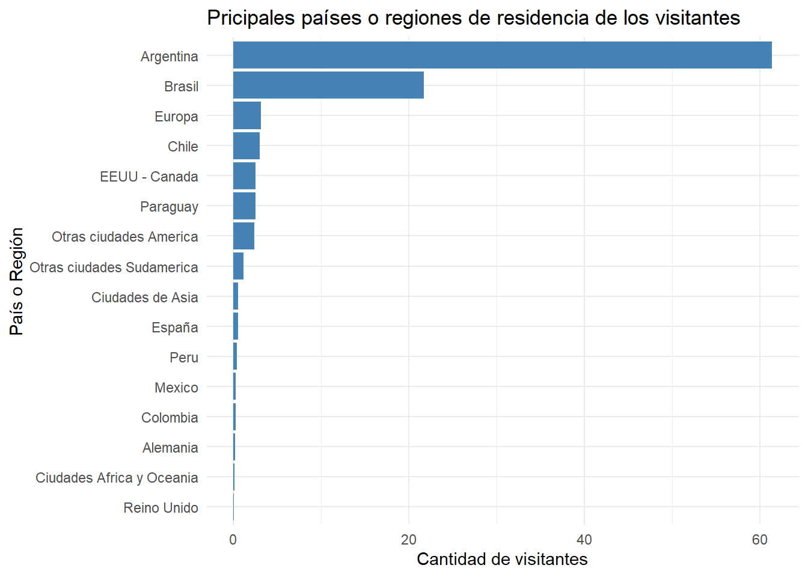
1.2 Considerando la residencia de los visitantes por continente, ¿de qué continente provienen la mayoría de los visitantes?
Los pasos para resolver esta pregunta son similares al caso anterior. En primer lugar se debe crear una nueva variable Continente donde se agruparán los países por continente. Al igual que en el caso previo, se utiliza la función case_when para agrupar los países en la categoría corespondiente: Europa, Asia, América del Sur, América del Norte, América Central, Oceanía, Africa.
En primer lugar, visualizamos los valores únicos de la variable Pais_residencia mediante la función unique, con el fin de identificar las categorías presentes y definir los agrupamientos necesarios.
#Valores únicos de las categorías presentes en variable Pais_residencia
unique(df1$Pais_residencia) [1] "Otras ciudades Sudamerica" "Brasil"
[3] "Paraguay" "Argentina"
[5] "Europa" "EEUU - Canada"
[7] "Chile" "Otras ciudades America"
[9] "Ciudades de Asia" NA
[11] "Ciudades Africa y Oceania" "España"
[13] "Colombia" "Alemania"
[15] "Mexico" "Peru"
[17] "Reino Unido" Una vez que tenemos todas las categorías posibles, creamos la variable continente
#Creamos variable continente
df1 = df1 |>
mutate(
Continente = case_when(
Pais_residencia %in% c('Otras ciudades Sudamerica', 'Brasil','Paraguay','Argentina', 'Chile', 'Otras ciudades America', 'Colombia','Peru') ~ 'América del Sur y Central',
Pais_residencia %in% c('EEUU - Canada', 'Mexico') ~ 'América del Norte',
Pais_residencia %in% c('Europa', 'Alemanai', 'España', 'Reino Unido') ~ 'Europa' ,
Pais_residencia == 'Ciudades de Asia' ~'Asia',
Pais_residencia == 'Ciudades Africa y Oceania' ~'África y Oceanía'
)
)Una vez que fue creada la variable Continente, es posible analizar de qué continente provienen la mayoría de los visitantes a través del comando count. Se creó una nueva columna con el valor expresado en porcentaje para facilitar la visualización.
#Tabla de frecuencia de variable Continente
df1 |>
filter(!is.na(Continente)) |>
count(Continente, sort = TRUE) |>
mutate(porcentaje = (n/ sum(n)) *100)# A tibble: 5 × 3
Continente n porcentaje
<chr> <int> <dbl>
1 América del Sur y Central 60597 92.9
2 Europa 2412 3.70
3 América del Norte 1808 2.77
4 Asia 343 0.526
5 África y Oceanía 63 0.0966Frente a estos datos, puede observarse que una gran mayoría (92%) de los visitantes que ingresan a Uruguay, provienen de América del Sur y Central,. Luego, en una proporción significativamente menor provienen de Europa y América del Norte representando un 3,8% y 2,76% de los visitantes respectivamente.
Finalmente creamos un gráfico representativo de la Proporción de visitantes por continente
#Gráfico proporción de visitantes por Continente
df1 |>
filter(!is.na(Continente)) |>
count(Continente) |>
mutate(porcentaje = (n/ sum(n)) *100) |>
ggplot(aes(x=reorder(Continente, porcentaje), y = porcentaje))+
geom_col(fill='steelblue')+ coord_flip()+
labs(title = 'Proporción de visitantes por continente', x= 'Continente', y='Porcentaje de visitantes')+
theme(plot.title = element_text(face = 'bold', size =12), legend.position = 'bottom')+
theme_minimal()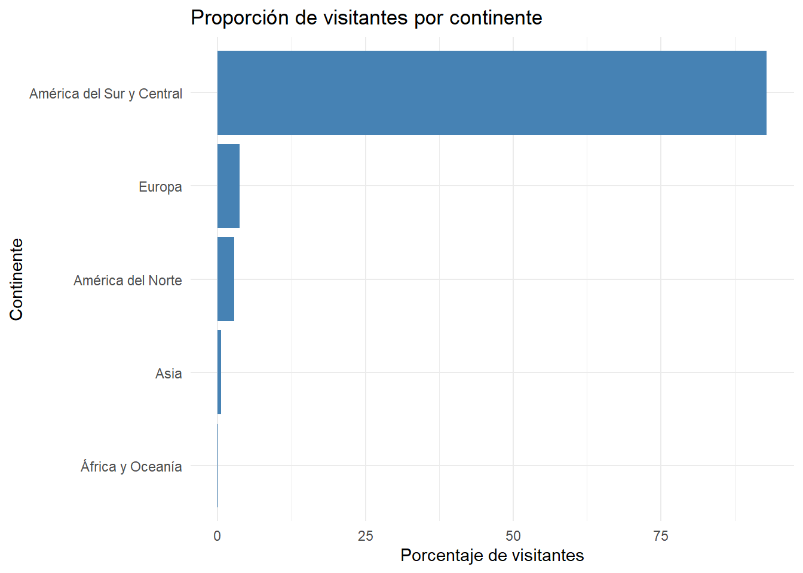
1.3 Durante 2016 a 2024, ¿en qué meses del año ingresaron más turistas?
Teniendo en cuenta que se pretende analizar los meses del año en los que ingresan más turistas, se deberá trabajar con la variable FechaIngreso que refiere a la fecha de Ingreso al país. Como fue mencionado en la sección anterioe, la informacion está expresada en formato fecha, por lo que no es necesario convertir la variable y se puede extraer el mes directamente. Para extraer el mes de la fecha, se creó una nueva variable con los meses: 12 niveles con sus respectivos nombres (labels). Previo a ello, fue necesario convertir la variable a factor.
#Creamos variable Meses
df1 = df1 |>
mutate(
Mes = factor(
month(FechaIngreso),
levels = 1:12,
labels = c(
'Enero', 'Febrero', 'Marzo', 'Abril', 'Mayo', 'Junio','Julio', 'Agosto', 'Setiembre', 'Octubre', 'Noviembre', 'Diciembre')
)
)Una vez que fue creada la nueva variable Mes, es posible analizar el flujo de visitantes que ingresaron al país durante 2016-2024, dependiendo del mes, a través del comando count. Se creó una nueva columna con el valor expresado en porcentaje para facilitar la visualización.
#Cantidad de visitantes que Ingresan al país por mes
df1 |>
count(Mes) |>
mutate(porcentaje = n / sum(n)* 100)# A tibble: 12 × 3
Mes n porcentaje
<fct> <int> <dbl>
1 Enero 8689 13.3
2 Febrero 7637 11.7
3 Marzo 6096 9.33
4 Abril 4798 7.34
5 Mayo 4160 6.37
6 Junio 4707 7.20
7 Julio 5024 7.69
8 Agosto 4472 6.84
9 Setiembre 4653 7.12
10 Octubre 4073 6.23
11 Noviembre 4566 6.99
12 Diciembre 6458 9.88Y luego construímos un gráfico de barras para visualizar los datos
#Gráfico de barras de la cantidad promedio de visitantes que ingresaron al país desagregada por mes durante el período 2016-2024
df1 |>
count(Mes) |>
mutate(porcentaje = n / sum(n)* 100) |>
ggplot(aes(x=Mes, y = porcentaje))+
geom_col(fill='steelblue')+
labs(title = 'Cantidad promedio de visitantes que ingresaron al país por mes durante 2016-2024', x= 'Mes', y='Porcentaje de visitantes')+
theme(plot.title = element_text(face = 'bold', size =12), legend.position = 'bottom')+
theme_minimal()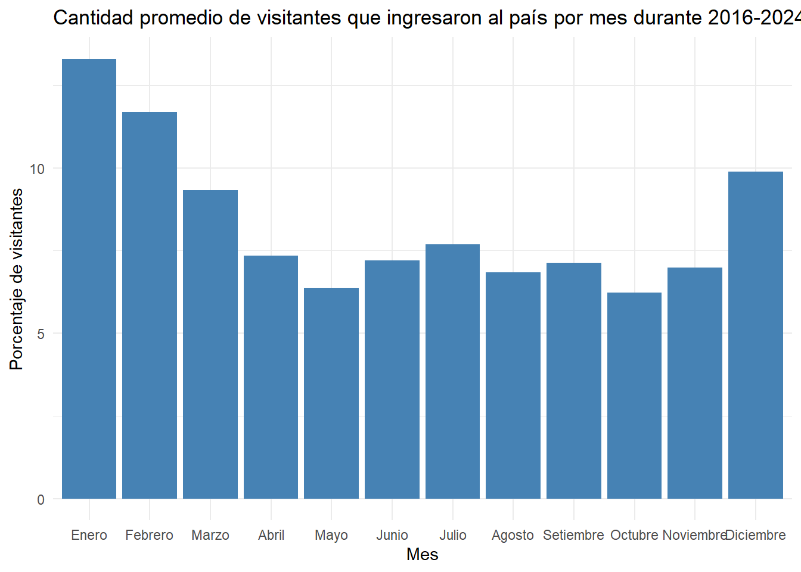
Al observar la tabla de frecuencias absoluta y relativa y el gráfico de barras referido a la cantidad de visitantes que ingresaron al país desagregado por mes, es posible extraer ciertas conclusiones. Durante el período 2016-2024, la mayoría de los visitantes ingresaron al país durante el verano, es decir: Diciembre, Enero y Febrero. Los mayores ingresos se concentran en Enero mientras que Mayo y Octubre fueron los meses con menor entrada de visitantes al Uruguay. Mientras que el mes de Diciembre y el primer trimestre del año concentran el mayor flujo de entradas, el resto del año es relativamente constante.
Por su parte, si se quiere analizar si existe un mismo patron en el flujo de entrada de los visitantes a lo largo de los años 2016-2024, se puede desagregar por año. Para ello primero se debe crear una variable Año extrayendo el año de la variable FechaIngreso.
#Creamos la variable año
df1 = df1 |>
mutate(
Año = year(FechaIngreso)
)Una vez que se creó la variable año, es posible realizar un gráfico de líneas por cada año para visualizar cómo varía la entrada de visitantes al país por mes dependiendo de cada año. Para ello se utilizó la función geom_point y geom_line ya que es una variable continua.
#Visualización de la entrada de visitantes al país durante cada año del 2016-
df1 |>
count(Año, Mes) |>
mutate(porcentaje=n/sum(n)*100) |>
ggplot(aes(x=Mes, y=porcentaje, color=factor(Año), group=Año))+
geom_line()+
geom_point()+
labs(title = 'Proporción de visitantes que ingresaron al país por mes durante 2016-2024', x= 'Mes', y='Porcentaje de visitantes', color= 'Año')+
theme(plot.title = element_text(face = 'bold', size =12), legend.position = 'bottom')+
theme_minimal()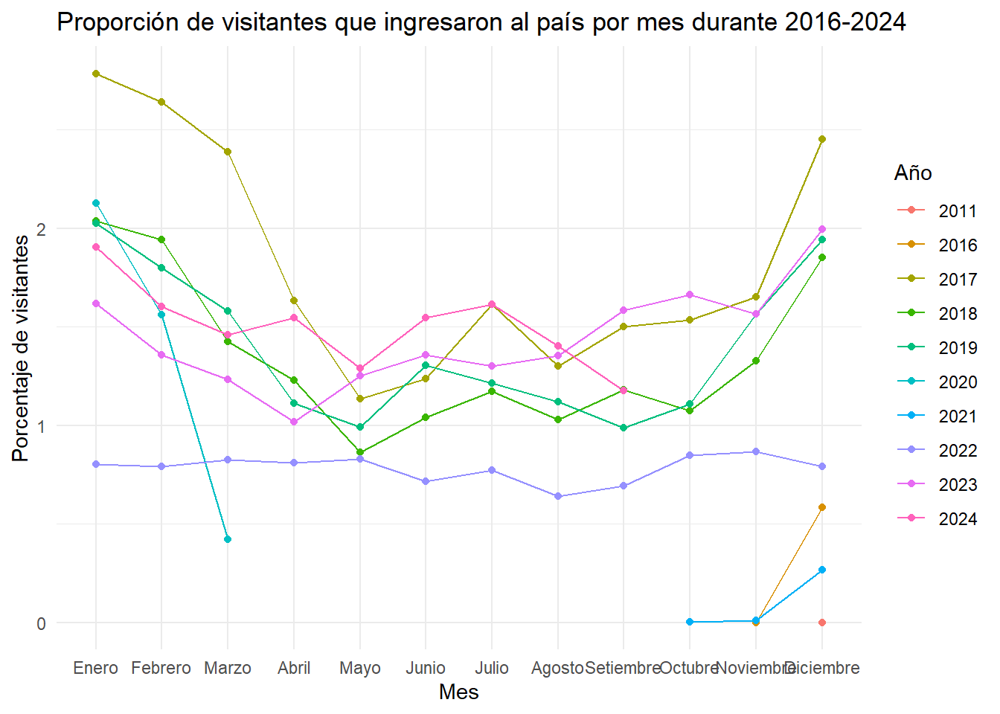
A partir de este gráfico se puede concluir que, a pesar de que los datos varían año a año, existe cierta estacionalidad. Es notorio que los meses con mayor ingreso de visitantes son Diciembre, Enero, Febrero. Por su parte, a partir de marzo 2020 a octubre 2021 no hubo entrada de visitantes debido a la pandemia por el COVID-19.
2.1 ¿Cuál es el principal motivo del viaje?
Para analizar cuál es el principal motivo del viaje se puede realizar una tabla de frecuencias relativas y absolutas como en los casos anteriores y luego vizualizar los resultados mediante un gráfico de barras.
#Tabla de frecuencias relativas y absolutas del motivo del viaje
df1 |>
count(Motivo, sort = TRUE) |>
mutate(porcentaje = n/sum(n)* 100)# A tibble: 11 × 3
Motivo n porcentaje
<chr> <int> <dbl>
1 Ocio y vacaciones 36248 55.5
2 Visita a familiares y amigos 15282 23.4
3 Trabajo / Profesional 6397 9.79
4 Transito 3111 4.76
5 Segunda Residencia 2161 3.31
6 Otros 1022 1.56
7 Estudios 292 0.447
8 Salud / wellness 277 0.424
9 Compras 249 0.381
10 Religioso 193 0.295
11 MICE 101 0.155#Gráfico motivo de viaje de los visitantes
df1 |> count(Motivo, sort = TRUE) |>
mutate(porcentaje = (n/ sum(n)) *100) |>
ggplot(aes(x=reorder(Motivo, porcentaje), y = porcentaje))+
geom_col(fill='steelblue')+
coord_flip()+
labs(title = 'Motivo de viaje de los visitantes durante 2016-2024', x= 'Motivo del viaje', y='Porcentaje de visitantes')+
theme(plot.title = element_text(face = 'bold', size =12), legend.position = 'bottom')+
theme_minimal()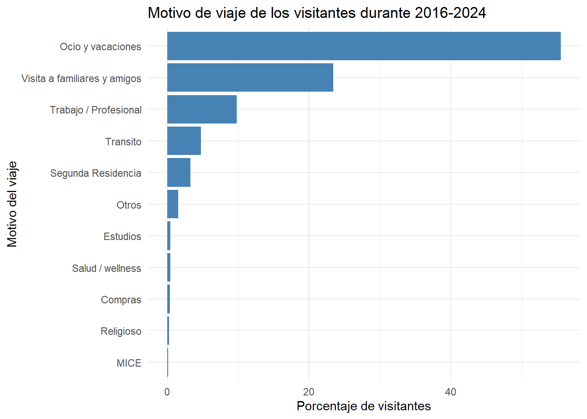
Al observar los resultados, es posible concluir que el principal motivo del viaje es por ocio y vacaciones y más de la mitad de los visitantes han ingresado al país por este motivo. Por su parte, la visita a familiares y amigos es el segundo motivo más importante, lo cual tiene lógica porque comose vio anteriormente, una gran proporción de los visitantes son de nacionalidad uruguaya. Seguido a esto pero en una menor proporción, el trabajo es un motivo recurrente entre los visitantes dado que mas de 9% de los visitantes entran al país por dicho motivo. Finalmente, una mínima, proporción de visitantes (menor al 0.5% en cada caso) ingresan por estudios, compras, por motivos de salud, religiosos o de MICE (Meetings, Incentives, Conferences and Exhibitions).
2.2 ¿Cómo varía el motivo del viaje según el destino elegido?
Para responder esta pregunta, se estudió conjuntamente la variable “Motivo” que indica la razón principal del viaje y la variable “Destino”, que identifica el principal destino visitado durante la estadía.
En primer lugar, se analizaron las categorías existentes en ambas variables mediante la función unique para reconocerlas.
unique(df1$Motivo) [1] "Otros" "Ocio y vacaciones"
[3] "Trabajo / Profesional" "Visita a familiares y amigos"
[5] "Segunda Residencia" "Estudios"
[7] "Salud / wellness" "Compras"
[9] "Religioso" "Transito"
[11] "MICE" unique(df1$Destino)[1] "Montevideo" "Punta del Este" "Piriapolis" "Costas Oceanicas"
[5] "Colonia" "Costa de Oro" "Otros" "Litoral Termal"
[9] "Transito" Podemos observar que las categorías de motivos de viaje son 11, mientras que los destinos de viaje se concentran en 9, mayoritariamente en la capital y el este del país, aunque también hay destinos como Colonia o el Litoral Termal. En el caso de los destinos, también se encuentra la categoría “Tránsito”, que refiere a las personas que ingresan al país, pero debido a una conexión, siendo su destino final fuera de Uruguay. En ambas categorías se encuentra el grupo “Otros” que refiere a motivos o destinos diferentes a los de las categorías, pero que no se cuenta con suficientes observaciones como para generar una nueva, por lo que se agrupan.
Para verificar si existen datos faltantes en ambas variables, se utilizó la función sum junto con is.na para, en caso de que existan, se genere un conteo de cuántas variables son en cada caso.
df1 |>
summarise(
faltantes_motivo = sum(is.na(Motivo)),
faltantes_destino = sum(is.na(Destino))
)# A tibble: 1 × 2
faltantes_motivo faltantes_destino
<int> <int>
1 0 0La salida de R indica que no existen datos faltantes para las categorías.
Para un primer análisis exploratorio, se construyó una tabla de frecuencias relativas por motivo y destino del viaje, que permite identificar las principales combinaciones de variables y qué porcentaje dentro del total de las observaciones por destino corresponden a los distintos motivos.
# Frecuencias relativas de los motivos dentro de cada destino
tabla_destino_motivo = df1 |>
count(Destino, Motivo, name = "cantidad") |>
group_by(Destino) |>
mutate(
total_destino = sum(cantidad), porcentaje = cantidad / total_destino * 100 ) |> ungroup() |>
arrange(Destino, desc(porcentaje))
tabla_destino_motivo# A tibble: 73 × 5
Destino Motivo cantidad total_destino porcentaje
<chr> <chr> <int> <int> <dbl>
1 Colonia Ocio y vacaciones 4822 6530 73.8
2 Colonia Visita a familiares y amigos 1121 6530 17.2
3 Colonia Trabajo / Profesional 302 6530 4.62
4 Colonia Segunda Residencia 153 6530 2.34
5 Colonia Otros 100 6530 1.53
6 Colonia Estudios 11 6530 0.168
7 Colonia Religioso 10 6530 0.153
8 Colonia Salud / wellness 8 6530 0.123
9 Colonia MICE 2 6530 0.0306
10 Colonia Compras 1 6530 0.0153
# ℹ 63 more rowsEn primer lugar, en la columna “total_destino” podemos extraer información respecto de los principales destinos de viaje, que son Montevideo (con un total de 21.610 casos de las 65.333 observaciones, aproximadamente 1/3) y Punta del Este. Cabe destacar que las observaciones de Punta del Este son casi la mitad que las de Montevideo (11.924). A estos destinos les siguen el Litoral Termal, con 9.702 observaciones y Colonia, con 6.530 observaciones. Si bien estos destinos son los que atraen a la mayor parte de turistas, la proporción es considerablemente menor que en Montevideo.
Por otro lado, el principal motivo de viaje en casi todos los destinos es “Ocio y vacaciones”, concentrando al menos la mitad de las observaciones en cada lugar, aunque en algunos destinos como Colonia, las Costas Oceánicas, Piriápolis y Punta del Este representan entre el 74% y el 84%, lo cual podemos observar a través de la columna “porcentaje”.
La categoría “Visita a familiares y amigos” es la segunda en relevancia en la mayoría de los destinos, aunque en cuanto a la categoría de “Tránsito”, casi el 100% tiene este mismo motivo de viaje, lo cual no es relevante para el análisis, porque estos pasajeros no tienen a Uruguay como destino final.
Para visualizar la composición e incidencia de los motivos del viaje en cada destino, se realizó un gráfico de barras apiladas. En este, cada barra representa un destino, y los diferentes colores el segmento de proporción correspondiente a cada motivo del viaje. Cabe aclarar, que cada barra suma 100% y no corresponden al porcentaje del total de observaciones, pero es la mejor manera de poder observar el motivo más frecuente dentro de cada destinto y comparar entre ellos. Para esto se utilizó el argumento position=“fill” dentro de geom_bar().
# Gráfico de barras apiladas
df1 |>
ggplot(aes(x = Destino, fill = Motivo)) +
geom_bar(position = "fill") +
coord_flip() +
scale_y_continuous(labels = scales::percent_format(accuracy = 1) )+
scale_fill_brewer(palette="Set3") +
labs( title = "Motivos del viaje según el destino elegido", subtitle = "Distribución porcentual de los motivos dentro de cada destino, 2016-2024", x = "Destino", y = "Porcentaje de visitantes", fill = "Motivo del viaje" ) +
theme_minimal() +
theme( plot.title = element_text(face = "bold", size = 12), legend.position = "bottom" )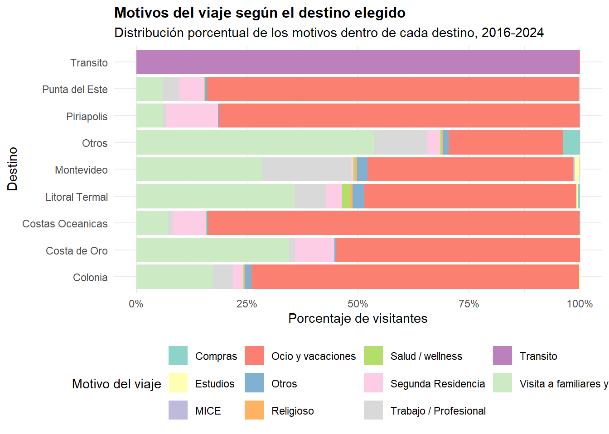
El gráfico de barras apiladas permite observar lo analizado anteriormente. Sin embargo, no deja claras las cantidades absolutas respecto del total de observaciones. En este sentido, se agregó un complemento que grafica las cantidades absolutas, lo cual permite visualizar de manera simultánea los motivos y las diferencias en el número de observaciones por destino.
df1 |>
count(Destino, Motivo) |>
ggplot( aes( x = reorder(Destino, n, FUN = sum), y = n, fill = Motivo ) ) +
geom_col() +
coord_flip() +
labs( title = "Cantidad de visitantes según destino y motivo del viaje", subtitle = "Turismo receptivo en Uruguay, 2016-2024", x = "Destino", y = "Cantidad de observaciones", fill = "Motivo del viaje" ) +
theme_minimal() +
theme( plot.title = element_text(face = "bold", size = 12), legend.position = "bottom" )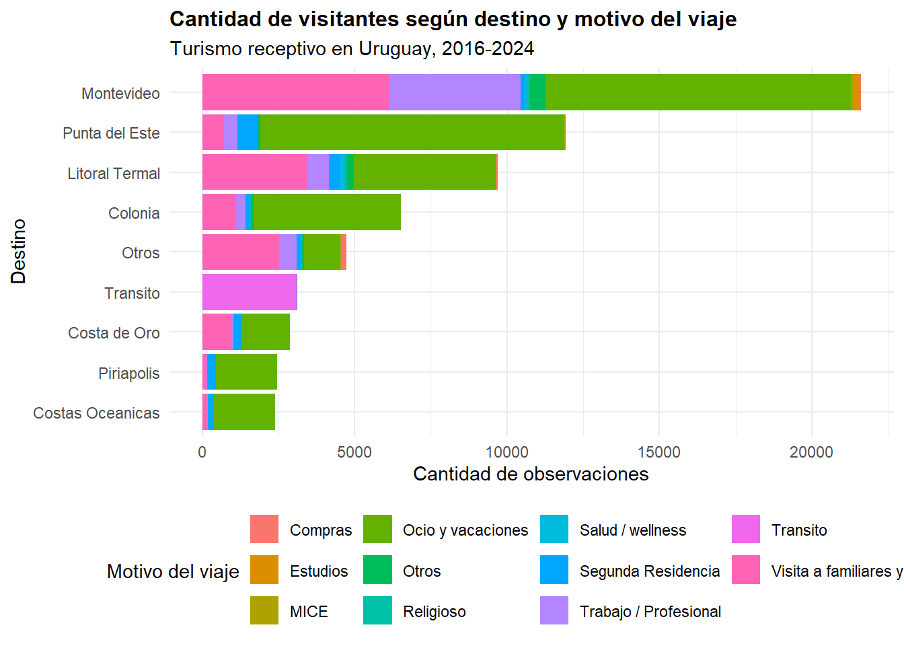
En conclusión, podemos afirmar que, a grandes rasgos, no existen diferencias significativas en los motivos del viaje según el destino.
2.3 ¿Cómo varía el destino elegido según la región de residencia del visitante?
Para responder esta pregunta, se utilizó principalmente la variable “Continente”, creada a partir del país o región de residencia y su relación con la variable “Destino”.
En primer lugar, sabemos que la variable “Continente” tiene datos faltantes, por lo cual se usó “filter(!is.na())” para excluir estos datos del análisis.
Al igual que en el caso anterior, construimos una tabla de frecuencias relativas, para conocer cómo se distribuyen las observaciones según las distintas combinaciones de continente y destino. Para esto, se agruparon las observaciones según la variable “Continente” y se creó la columna de “porcentaje”, para poder observar qué parte del total de las observaciones por continente corresponde a cada destino.
tabla_continente_destino = df1 |>
filter(!is.na(Continente) ) |>
count(Continente, Destino, name = "cantidad") |>
group_by(Continente) |>
mutate(
total_continente = sum(cantidad),
porcentaje = cantidad / total_continente * 100 ) |>
ungroup() |>
arrange(Continente, desc(porcentaje))
tabla_continente_destino# A tibble: 42 × 5
Continente Destino cantidad total_continente porcentaje
<chr> <chr> <int> <int> <dbl>
1 América del Norte Montevideo 1127 1808 62.3
2 América del Norte Colonia 328 1808 18.1
3 América del Norte Punta del Este 187 1808 10.3
4 América del Norte Costa de Oro 47 1808 2.60
5 América del Norte Costas Oceani… 39 1808 2.16
6 América del Norte Otros 39 1808 2.16
7 América del Norte Piriapolis 26 1808 1.44
8 América del Norte Litoral Termal 8 1808 0.442
9 América del Norte Transito 7 1808 0.387
10 América del Sur y Central Montevideo 18814 60597 31.0
# ℹ 32 more rowsComo se puede observar, la gran mayoría de los turistas provienen de América del Sur y Central (93%), y el resto de los continentes componen el 7% de las observaciones. A grandes rasgos, podemos afirmar que el destino visitado en Uruguay no cambia sustancialmente según el continente de proveniencia: la mayoría visitan Montevideo y luego Colonia o Punta del Este.
Para visualizar la distribución, se construyó un gráfico de barras apiladas al 100%, tal y como se realizó en el punto anterior:
# Gráfico de barras apiladas al 100%
df1 |>
filter( !is.na(Continente), !is.na(Destino) ) |>
ggplot(aes(x = Continente, fill = Destino))+
geom_bar(position = "fill") +
coord_flip() +
scale_y_continuous( labels = scales::percent_format(accuracy = 1) ) +
labs( title = "Destino elegido según la región de residencia", subtitle = "Distribución porcentual de los destinos dentro de cada región, 2016-2024", x = "Región de residencia", y = "Porcentaje de visitantes", fill = "Destino" ) +
theme_minimal() +
theme( plot.title = element_text(face = "bold", size = 12), legend.position = "bottom" )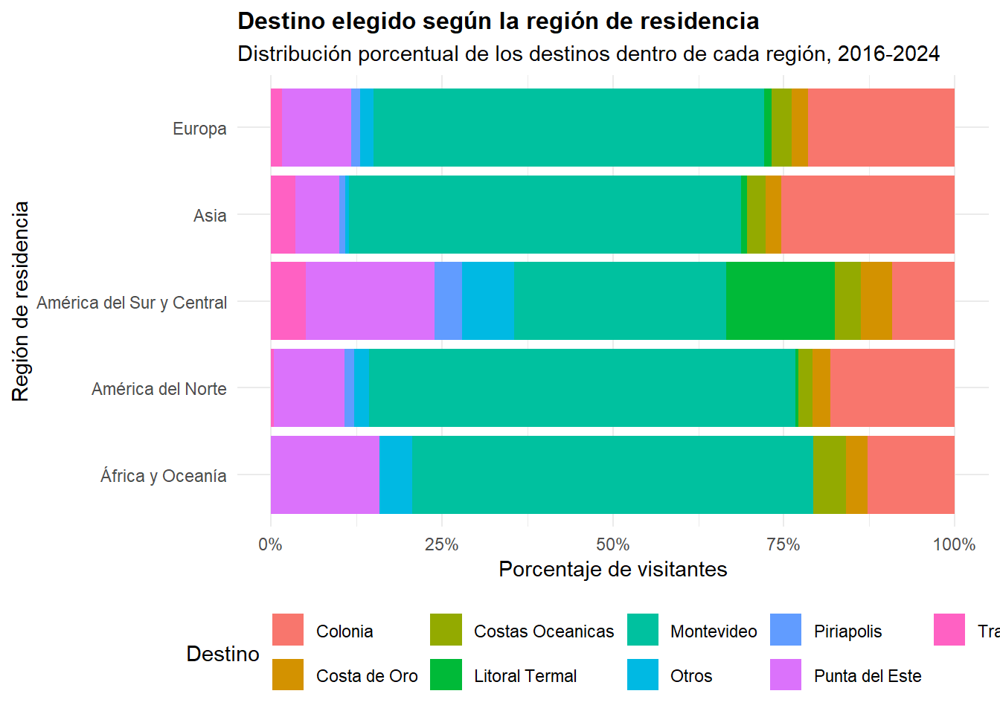
Lo observado en el gráfico coincide con el análisis: la amplia mayoría de turistas, independientemente de su proveniencia, viajan a Montevideo, y dependiendo del continente, el segundo lugar más visitado es Punta del Este (América del Sur y Central, África y Oceanía) o Colonia (Europa, Asia, América del Norte).
- Estadía
3.1 ¿Cómo se distribuye la duración de la estadía y cuál es su duración promedio?
Para analizar la distribución de la duración de la estadía, se calcularon medidas de resumen como la media, la mediana, el desvío estándar,los cuartiles, el máximo y el mínimo, utilizando el verbo summarise(). Posteriormente, el análisis se complementó con visualizaciones que permiten estudiar la forma de la distribución y detectar posible presencia de valores atípicos.
Dado que ya existe una variable llamada Estadía que corresponde a los días que permanecen los visitantes en nuestro país, las medidas de resumen se calcularon sobre dicha variable.
#Caluclamos la distribución de la duración de la estadía
dist_estadia = df1 |>
summarise(
estadia_promedio=mean(Estadia, na.rm=TRUE),
mediana_estadia = median(Estadia, na.rm = TRUE),
desvio_estadia= sd(Estadia, na.rm = TRUE),
q1_estadia= quantile(Estadia, 0.25, na.rm = TRUE),
q3_estadia= quantile(Estadia, 0.75, na.rm = TRUE),
min_estadia= min(Estadia, na.rm = TRUE),
max_estadia= max(Estadia, na.rm = TRUE) )
dist_estadia# A tibble: 1 × 7
estadia_promedio mediana_estadia desvio_estadia q1_estadia q3_estadia
<dbl> <dbl> <dbl> <dbl> <dbl>
1 5.70 4 6.66 3 7
# ℹ 2 more variables: min_estadia <dbl>, max_estadia <dbl>Las medidas de resumen muestran que la estadía promedio de los visitantes es de 5,7 días mientras que la mediana es de 4 días. Asimismo, el 50% central de los visitantes permanece en el país entre 3 y 7 días de acuerdo con el primer y tercer cuartil. La estadía mínima registrada es de medio día y la máxima alcanza los 365 días.
Por otra parte, la media es superior a la mediana, lo que indica una distribución con asimetría positiva. Esto sugiere un número reducido de visitantes con estadías considerablemente más largas que el resto, elevando el promedio.
Para visualizar la distribuición de la duración de la estadía se construyó un gráfico de barras, donde cada barra represente el número de visitantes para cada número de días de permanencia. Sin embargo, el gráfico resulta poco informativo debido a la existencia de algunas estadías muy prolongadas que expanden la escala del eje horizontal y dificultan la visualización de la distribución para la mayoría de los visitantes:
#Construimos gráfico de barras de la distribución de la estadía de los visitantes
df1 |>
count(Estadia) |>
ggplot(aes(x=factor(Estadia), y=n))+
geom_col(fill='steelblue')+
labs(title = 'Distribución de la estadía de los visitantes', x='Días de estadía', y='Cantidad de visitantes')+
theme(plot.title = element_text(face='bold', size=12), legend.position = 'bottom')+
theme_minimal()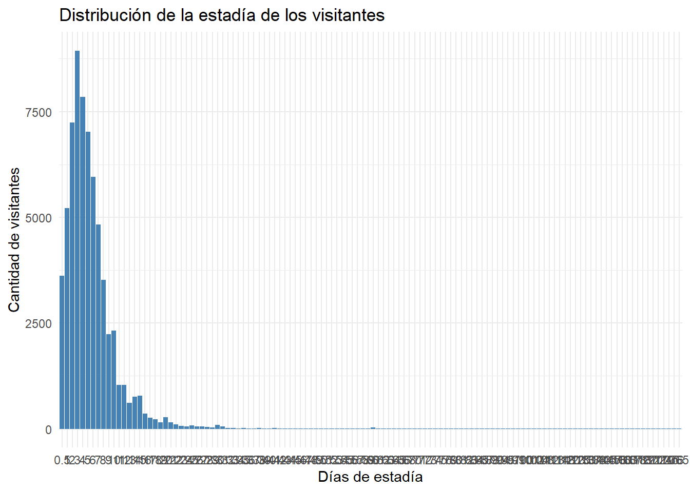
Con el objetivo de facilitar la interpretación del gráfico, consideramos pertinente limitar la escala a un máximo de 20 días. Esta decisión no implica eliminar observaciones del análisis, sino únicamente restringir la escala del eje horizontal mediante coord_cartesian().
Antes de limitar la escala del gráfico se verificó que solamente un 1,7% de los visitantes permanecen en el país por un período mayor a 20 días sumando la cantidad de observaciones cuyo valor en la variable Estadía era mayor que 20 a través de la función sum, sin tomar en cuenta lo datos faltantes. Luego se calculó la proporción que representaban respecto al total de observaciones.
#Proporción de visitantes con estadías mayores a 20 días
df1 |>
summarise(
total = sum(!is.na(Estadia)),
masde20 = sum(Estadia > 20, na.rm = TRUE),
prop_masde20 = masde20 / total
)# A tibble: 1 × 3
total masde20 prop_masde20
<int> <int> <dbl>
1 65333 1092 0.0167Por lo tanto el gráfico acotado representa aproximadamente el 98,3% de las observaciones y permite apreciar con mayor claridad la distribución de la variable.
#Gráfico de la distribución de la duración de la estadía con escala acotada
df1 |>
count(Estadia) |>
ggplot(aes(x=factor(Estadia), y =n))+
geom_col(fill = 'steelblue')+
coord_cartesian(xlim = c(0,20))+
labs(title = 'Distribución de la duración de la estadía', x='Días de estadía', y='Cantidad de visitantes')+
theme(plot.title = element_text(face='bold', size=12), legend.position ='bottom')+
theme_minimal()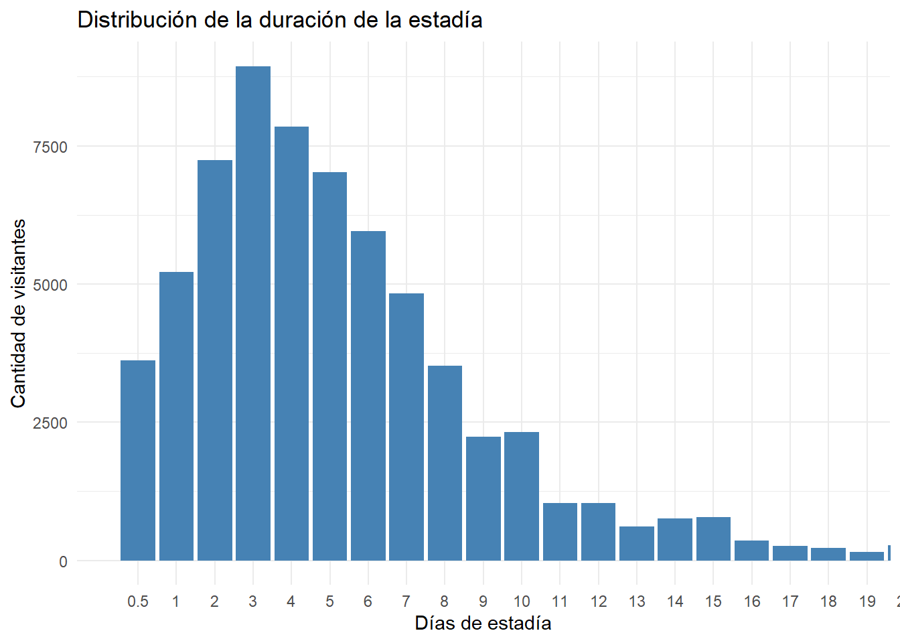
Finalmente se presenta un diagrama de caja que resume la distribución de la duración de la estadía y permite identificar la presencia de valores atípicos, confirmando la existencia de algunas estadías significativamente superiores al resto de las observaciones. Para la construcción del Diagrama de caja, también se limitó la escala a una estadía menor a 20 días mediante coord_cartesiano para que sea más informatvo:
#Diagrama de caja de la duración de la estadía
df1 |>
ggplot(aes(y=Estadia))+
geom_boxplot()+
coord_cartesian(ylim = c(0,20))+
labs(title = 'Diagrama de caja de la duración de la estadía', x=NULL, y='Días de estadía')+
theme_minimal()+
theme(plot.title = element_text(face='bold', size=12), legend.position = 'bottom')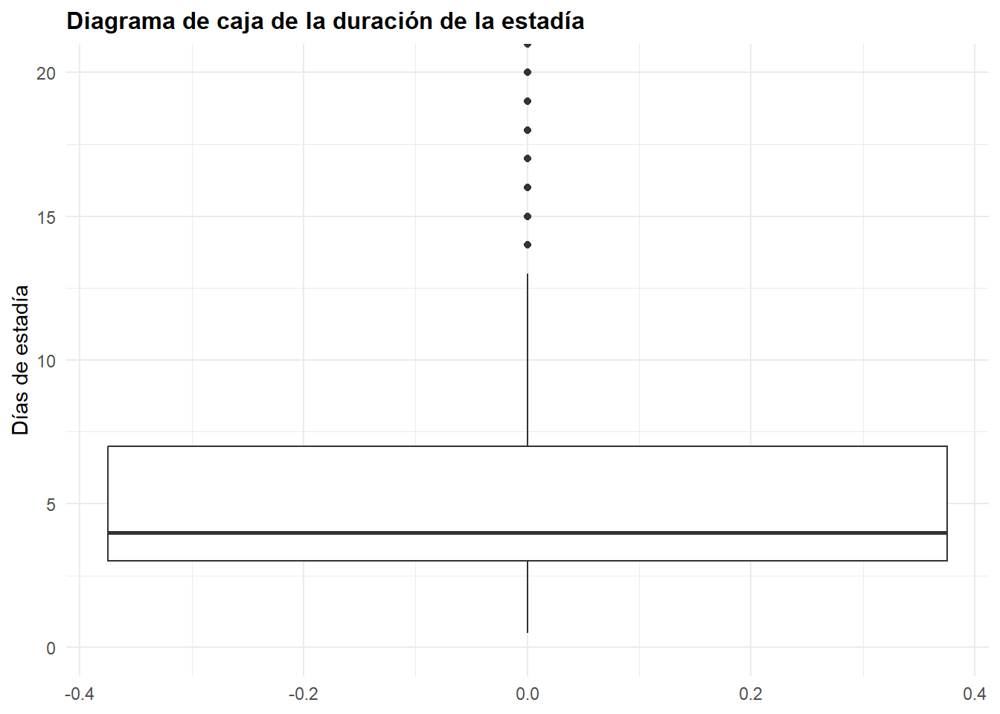
En conclusión, el Diagrama de Caja reafirma las conclusiones previas. La mediana se ubica en 4 días y el 50% de los visitantes permanecen en el país entre 3 y 7 días. Por su parte, se confirma una asimetría positiva con numerosos valores atípicos por encima del bigote superior, alcanzando una estadía máxima de 365 días. En consecuencia, si bien la mayoría de los visitantes permanecen en el país unos pocos días, existe un grupo reducido con estadías considerablemente más prolongadas que elevan el promedio a 5,7 días.
3.2 ¿La duración de la estadía varía según lel destion?
Con el fin de analizar si varía la la duración de la estadía dependiendo del destino elegido por los visitantes, se calcularon las mismas medidas de resumen presentadas en la sección anterior agrupando las observaciones por destino mediante el verbo group_by(). Luego los destinos se ordenaron de forma descendiente según la la duración promedio de la estadía .
#Calculamos distribución de la estadía por destino
df1 |>
group_by(Destino) |>
summarise(
estadia_promedio=mean(Estadia, na.rm=TRUE),
mediana_estadia = median(Estadia, na.rm = TRUE),
desvio_estadia= sd(Estadia, na.rm = TRUE),
q1_estadia= quantile(Estadia, 0.25, na.rm = TRUE),
q3_estadia= quantile(Estadia, 0.75, na.rm = TRUE),
min_estadia= min(Estadia, na.rm = TRUE),
max_estadia= max(Estadia, na.rm = TRUE) ) |>
arrange(desc(estadia_promedio))# A tibble: 9 × 8
Destino estadia_promedio mediana_estadia desvio_estadia q1_estadia q3_estadia
<chr> <dbl> <dbl> <dbl> <dbl> <dbl>
1 Costas … 8.91 8 7.30 5 11
2 Piriapo… 8.49 8 4.84 5 10
3 Punta d… 8.15 7 7.01 5 10
4 Costa d… 7.72 7 6.11 5 9
5 Montevi… 5.86 5 7.90 3 7
6 Otros 5.12 4 6.40 3 6
7 Litoral… 3.90 3 2.69 2 5
8 Colonia 3.09 2 4.26 1 4
9 Transito 0.697 0.5 0.431 0.5 1
# ℹ 2 more variables: min_estadia <dbl>, max_estadia <dbl>Las medidas de resumen muestran que la duración de la estadía varía según el destino elegido. En particular, los visitantes que tienen como destino las Costas Oceánicas, Piriápolis, Punta del Este y la Costa de Oro presentan las mayores estadías promedio, comprendidas entre 7,7 y 8,9 días. En contraste, Montevideo registra una estadía promedio de 5,8 días, mientras que Colonia y el Litoral Termal presentan permanencias considerablemente menores, de 3,1 y 3,9 días, respectivamente. Finalmente, los visitantes en tránsito permanecen en el país menos de un día en promedio, lo cual resulta consistente con la naturaleza de este tipo de viaje..
Los cuartiles muestran que la dispersión también difiere entre destinos. En las Costas Oceánicas, Piriápolis, Punta del Este y la Costa de Oro, el 50% central de las estadías se ubica aproximadamente entre 5 y 9-11 días. En Montevideo, dicho intervalo se reduce a entre 3 y 7 días, mientras que en Colonia y el Litoral Termal las estadías son aún más cortas.
En todos los destinos la media supera a la mediana, lo que indica una distribución con asimetría positiva. Esto sugiere la existencia de algunas estadías con duración considerablemente más prolongada que la mayoría, las cuales incrementan el valor del promedio.
Estas interpretaciones también se pueden visualizar en un diagrama de caja:
#Diagrama de caja duración de la estadía según el destino
df1 |>
ggplot(aes(x=Destino, y=Estadia))+
geom_boxplot()+
labs(title = 'Diagrama de caja de la duración de la estadía según el destino', x='Destino', y='Días de estadía')+
theme(plot.title = element_text(face='bold', size=12), legend.position = 'bottom')+
theme_minimal()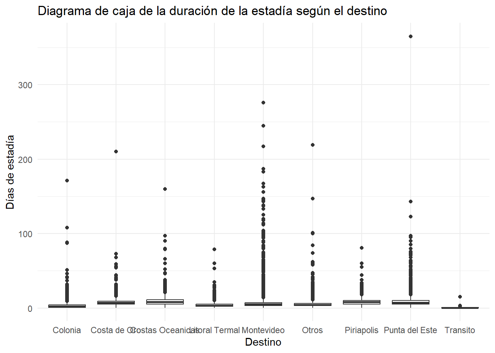
Dado que sucede lo mismo que en la sección anterior, limitamos la escala a una estadía menor a 20 días:
#Diagrama de caja de la duración de la estadía por Destino
df1 |>
ggplot(aes(x=Destino, y=Estadia, fill=Destino))+
geom_boxplot()+ coord_cartesian(ylim = c(0,20))+
labs(title = 'Diagrama de caja de la duración de la estadía según el destino', x='Destino', y='Días de estadía')+
theme_minimal()+
theme(
plot.title = element_text(face='bold', size=12),
axis.text.x = element_text(angle = 45, hjust = 1),
legend.position = 'none')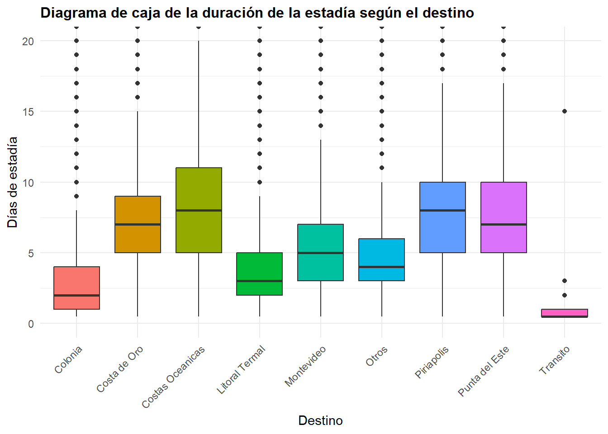
El diagrama de caja confirma estas conclusiones. Se observa que los destinos con mayor duración promedio también presentan medianas más elevadas y una mayor dispersión en la duración de la estadía. Asimismo, en todos los destinos se identifican valores atípicos correspondientes a estadías prolongadas, lo que resulta consistente con la asimetría positiva observada en las medidas de resumen.
En conclusión, las medidas de resumen y el diagrama de caja muestran que la duración de la estadía varía según el destino elegido. Los destinos Costas Oceánicas, Piriápolis, Punta del Este y Costa de Oro presentan las mayores duraciones promedio de estadía y, especialmente, los visitantes en tránsito registran estadías considerablemente menores. Asimismo, en todos los destinos se observa una distribución asimétrica hacia la derecha, consistente con la existencia de algunas estadías excepcionalmente largas.
3.3 ¿La duración de la estadía varía según el motivo del viaje?
Con el fin de analizar si varía la la duración de la estadía dependiendo del motivo del viaje, se calcularon las mismas medidas de resumen presentadas en la sección anterior agrupando las observaciones por motivo mediante el verbo group_by(). Luego la tabla de resultados se ordenó de forma descendiente según la la duración promedio de la estadía .
#Calculamos distribución de la estadía según el motivo
df1 |>
group_by(Motivo) |>
summarise(
estadia_promedio=mean(Estadia, na.rm=TRUE),
mediana_estadia = median(Estadia, na.rm = TRUE),
desvio_estadia= sd(Estadia, na.rm = TRUE),
q1_estadia= quantile(Estadia, 0.25, na.rm = TRUE),
q3_estadia= quantile(Estadia, 0.75, na.rm = TRUE),
min_estadia= min(Estadia, na.rm = TRUE),
max_estadia= max(Estadia, na.rm = TRUE) ) |>
arrange(desc(estadia_promedio))# A tibble: 11 × 8
Motivo estadia_promedio mediana_estadia desvio_estadia q1_estadia q3_estadia
<chr> <dbl> <dbl> <dbl> <dbl> <dbl>
1 Estudi… 17.6 6 33.0 3 15.2
2 Segund… 10.2 8 10.9 4 13
3 Ocio y… 6.16 5 5.23 3 8
4 Visita… 5.86 4 6.91 3 7
5 Religi… 5.48 3 19.9 2 5
6 MICE 5.12 5 2.89 3 6
7 Salud … 3.92 3 7.78 1 4
8 Trabaj… 3.87 3 6.70 2 4
9 Otros 2.60 2 3.65 1 3
10 Compras 1.50 1 0.896 1 2
11 Transi… 0.691 0.5 0.345 0.5 1
# ℹ 2 more variables: min_estadia <dbl>, max_estadia <dbl>Al agrupar las observaciones según el motivo del viaje, se observa que la duración promedio de la estadía difiere considerablemente entre categorías. Los visitantes cuyo motivo del viaje son estudios presentan la mayor estadía promedio, con 17,6 días, seguidos por quienes viajan por segunda residencia, con una permanencia promedio de 10,2 días. Estos resultados son esperables, ya que este tipo de viajes suele implicar estadías prolongadas.
En un segundo grupo se ubican los viajes por ocio y vacaciones, visita a familiares y amigos, motivos religiosos y MICE, cuyas estadías promedio oscilan entre 5 y 6 días. Estas categorías presentan duraciones similares y cercanas al promedio general observado anteriormente
Por el contrario, los viajes por compras registran la menor duración promedio (1,5 días), seguidos por la categoría Otros y por los viajes de trabajo o profesionales, con estadías promedio inferiores a cuatro días. Esto resulta consistente con la naturaleza de estos viajes, que generalmente requieren una permanencia más breve.
Cabe destacar que, en la categoría Estudios, la media (17,6 días) es considerablemente superior a la mediana (6 días),. Esto indica la existencia de algunos visitantes con estadías excepcionalmente largas que incrementan significativamente el promedio.
Se presenta a continuación un Diagrama de Cajas de la duración de la estadía dependiendo del motivo, al igual que en las secciones anteriores, se limitó la escala a 20 días de estadía.
#Diagrama de caja de la duración de la estadía por Destino
df1 |>
ggplot(aes(x=Motivo, y=Estadia, fill=Motivo))+
geom_boxplot()+
coord_cartesian(ylim = c(0,20))+
labs(title = 'Diagrama de caja de la duración de la estadía según el Motivo', x='Motivo del viaje', y='Días de estadía')+
theme_minimal()+
theme(
plot.title = element_text(face='bold', size=12),
axis.text.x = element_text(angle = 45, hjust = 1),
legend.position = 'none')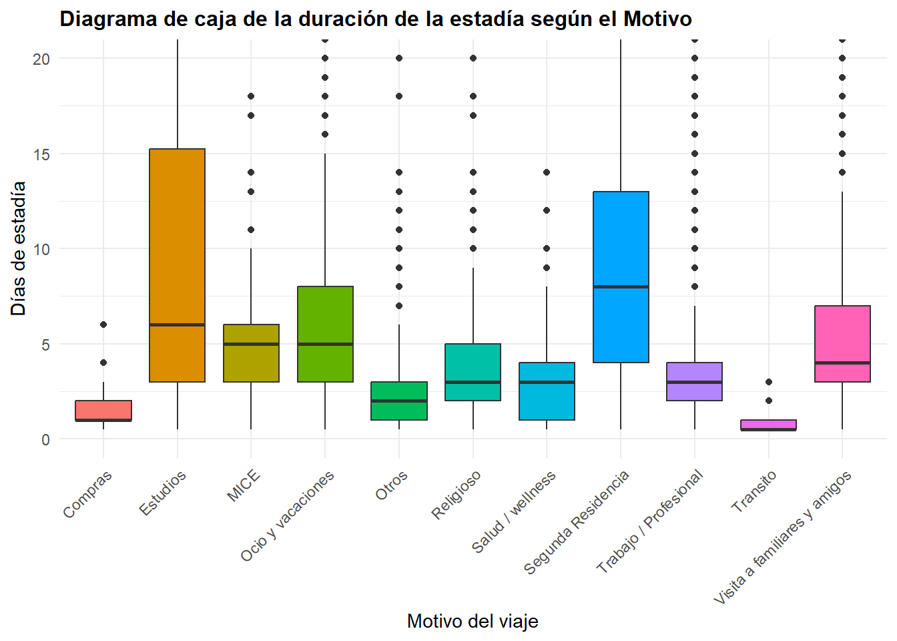
- Gastos turísticos
4.1 ¿Cuál es el gasto promedio diario de los visitantes?
Para analizar el gasto diario, se creó un nuevo objeto “df_gasto” que contenga las columnas del gasto diario y de los días de estadía, y se le agrega una tercer columna, que es el gasto promedio por día, llamado “GastoDiario”. En esta parte se excluyeron del análisis las otras variables, que no son necesarias.
df_gasto <- df1 |>
transmute(GastoTotal, Estadia)|>
mutate(GastoDiario=GastoTotal/Estadia)
df_gasto# A tibble: 65,333 × 3
GastoTotal Estadia GastoDiario
<dbl> <dbl> <dbl>
1 3213 9 357
2 2016 4 504
3 3846 8 481.
4 3696 8 462
5 6686 15 446.
6 290. 2 145.
7 1922 7 275.
8 700 2 350
9 2156 6 359.
10 1384 4 346
# ℹ 65,323 more rowsEl promedio diario de gasto por turista es de aproximadamente USD 240.
4.2 ¿Qué rubros concentran la mayor parte del gasto?
En primer lugar, se creó un objeto que conserva los componentes desagregados del gasto y excluye GastoTotal
rubros_gasto <- df1 |>
select(starts_with("Gasto"), -GastoTotal)
rubros_gasto# A tibble: 65,333 × 7
GastoAlojamiento GastoAlimentacion GastoTransporte GastoCultural GastoTours
<dbl> <dbl> <dbl> <dbl> <dbl>
1 1566 1134 0 0 0
2 784 376 72 384 0
3 1568 752 160 0 0
4 2352 1128 216 0 0
5 2940 1410 270 0 0
6 158. 104 15.8 0 0
7 320 658 378 0 0
8 400 200 100 0 0
9 500 564 108 384 0
10 750 564 70 0 0
# ℹ 65,323 more rows
# ℹ 2 more variables: GastoCompras <dbl>, GastoOtros <dbl>Como los rubros están distribuidos en distintas columnas, conviene transformar la base de ancho a largo. Esto lo hacemos mediante pivot_longer(). En esta tabla tenemos dos columnas: “Rubro”, que identifica el componente del gasto y “Gasto” que indica el valor registrado para ese rubro.
tabla_rubros <- rubros_gasto |>
pivot_longer(
cols = everything(),
names_to = "Rubro",
values_to = "Gasto"
)
tabla_rubros# A tibble: 457,331 × 2
Rubro Gasto
<chr> <dbl>
1 GastoAlojamiento 1566
2 GastoAlimentacion 1134
3 GastoTransporte 0
4 GastoCultural 0
5 GastoTours 0
6 GastoCompras 0
7 GastoOtros 513
8 GastoAlojamiento 784
9 GastoAlimentacion 376
10 GastoTransporte 72
# ℹ 457,321 more rowsEn segundo lugar, se sumó el total correspondiente a cada rubro, para luego poder calcular la participación porcentual. Se creó una nueva variable llamada “GastoAcumulado” que representa la suma total de los gastos registrados en cada rubro. La variable “Porcentaje” indica qué proporción del gasto total desagregado corresponde a cada uno.
resumen_rubros <-
tabla_rubros |>
group_by(Rubro) |>
summarise(
GastoAcumulado = sum(Gasto),
groups = "drop") |>
mutate(
Porcentaje = GastoAcumulado / sum(GastoAcumulado) * 100 ) |>
arrange(desc(GastoAcumulado))
resumen_rubros# A tibble: 7 × 4
Rubro GastoAcumulado groups Porcentaje
<chr> <dbl> <chr> <dbl>
1 GastoAlojamiento 28630999. drop 32.0
2 GastoAlimentacion 24512587. drop 27.4
3 GastoCompras 12224107. drop 13.7
4 GastoCultural 9827746. drop 11.0
5 GastoTransporte 7328881. drop 8.20
6 GastoOtros 6635517. drop 7.42
7 GastoTours 269410. drop 0.301El dataframe creado permite observar que casi un 60% del gasto se reparte entre alojamiento (32%) y alimentación (27,4%). Si además consideramos el gasto asociado a compras y temas culturales, el porcentaje asciende al 84% del total. Por tanto, puede afirmarse que el gasto turístico se encuentra principalmente orientado hacia estas categorías, mientras que los rubros restantes presentan una participación menor.
Para visualizar este resultado, creamos un gráfico de barras, en donde se ordenan los rubros de mayor a menor, según su participación porcentual en el gasto.
resumen_rubros |>
ggplot(aes(
x = reorder(Rubro, Porcentaje),
y = Porcentaje
)) +
geom_col(fill = "steelblue") +
coord_flip() +
scale_y_continuous(
labels = scales::label_percent(
scale = 1,
accuracy = 0.1,
decimal.mark = ","
)
) +
labs(
title = "Participación de cada rubro en el gasto turístico",
subtitle = "Porcentaje sobre el gasto total desagregado, 2016-2024",
x = "Rubro",
y = "Participación en el gasto total"
) +
theme_minimal()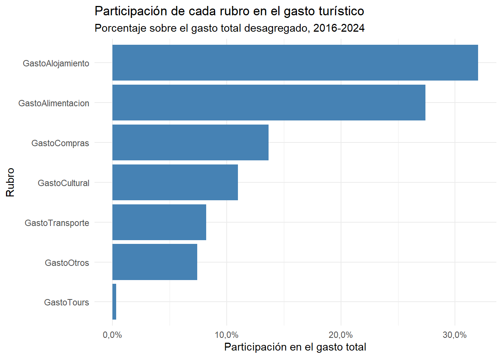
4.3 ¿El gasto diario varía según destino o motivo del viaje?
En primer lugar, se creó un nuevo dataframe con las variables de interés para el análisis, y además se creó la variable de gasto diario, que es igual a la usada anteriormente.
df_gasto_destino_motivo <- df1 |>
transmute(
Destino,
Motivo,
GastoTotal,
Estadia,
GastoDiario = GastoTotal / Estadia
)Luego, procedimos al análisis del gasto diario según destino, para lo cual se calculó el promedio de gasto por destino y la cantidad de observaciones por destino.
gasto_por_destino <-
df_gasto_destino_motivo |>
group_by(Destino) |>
summarise(
observaciones = n(),
gasto_promedio_diario = mean(GastoDiario)) |>
arrange(desc(gasto_promedio_diario))
gasto_por_destino# A tibble: 9 × 3
Destino observaciones gasto_promedio_diario
<chr> <int> <dbl>
1 Punta del Este 11924 427.
2 Piriapolis 2454 297.
3 Costas Oceanicas 2386 229.
4 Transito 3116 225.
5 Montevideo 21610 215.
6 Colonia 6530 200.
7 Litoral Termal 9702 161.
8 Costa de Oro 2882 147.
9 Otros 4729 139.Podemos observar que la variación de presupuestos entre destinos es sustancial: mientras en Punta del Este el gasto promedio diario por día es de 427 dólares, en la Costa de Oro es de 147. Podemos considerar que el dato de Punta del Este es atípico, ya que el segundo destino en el que más gastan los turistas por día es Pirápolis, con USD 297 dólares, es decir, 130 dólares menos que en Punta del Este. Esto tiene sentido desde un punto de vista económico, ya que es un destino más costoso que el resto.
Para poder visualizarlo gráficamente, se utilizó la herramienta del gráfico de barras:
gasto_por_destino |>
ggplot(
aes(
x = reorder(Destino, gasto_promedio_diario),
y = gasto_promedio_diario
)
) +
geom_col(fill = "steelblue") +
coord_flip() +
labs(
title = "Gasto diario promedio según el destino",
subtitle = "Turismo receptivo en Uruguay, 2016-2024",
x = "Destino",
y = "Gasto diario promedio" ) +
theme_minimal()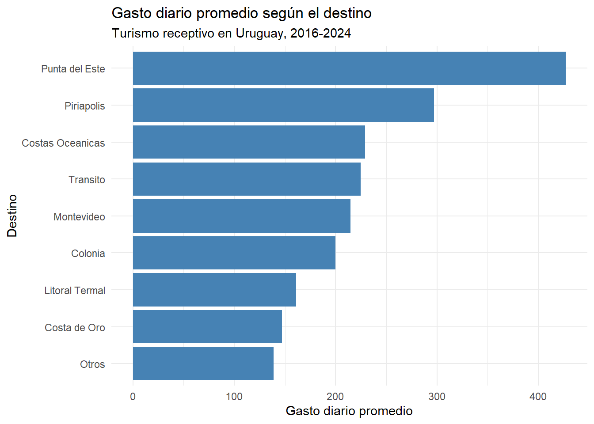
Para analizar el gasto diario por motivo de viaje, se utilizó la misma metodología y recursos que para el caso del destino:
gasto_por_motivo <-
df_gasto_destino_motivo |>
group_by(Motivo) |>
summarise(
observaciones = n(),
gasto_promedio_diario = mean(GastoDiario),
) |>
arrange(desc(gasto_promedio_diario))
gasto_por_motivo# A tibble: 11 × 3
Motivo observaciones gasto_promedio_diario
<chr> <int> <dbl>
1 Compras 249 426.
2 Ocio y vacaciones 36248 304.
3 Segunda Residencia 2161 298.
4 MICE 101 258.
5 Transito 3111 225.
6 Salud / wellness 277 171.
7 Trabajo / Profesional 6397 169.
8 Otros 1022 160.
9 Estudios 292 137.
10 Visita a familiares y amigos 15282 118.
11 Religioso 193 88.7El motivo de viaje en el cual el gasto diario es mayor es “Compras” lo cual tiene sentido, ya que los turistas afirman que el gasto será el elemento central de su viaje. Al igual que en el caso de los destinos, este valor está muy por encima del resto. En segundo lugar, el gasto diario en turistas que viajan por ocio y vacaciones y aquellos que tienen a Uruguay como segunda residencia es similar, en torno a los USD 300. Resulta interesante también destacar que el motivo de viaje en el cual el gasto promedio diario es menor es el religioso, con un gasto de 89 USD.
Gráficamente, también lo visualizamos a partir de un gráfico de barras:
gasto_por_motivo |>
ggplot(
aes(
x = reorder(Motivo, gasto_promedio_diario),
y = gasto_promedio_diario
)) +
geom_col(fill = "steelblue") +
coord_flip() +
labs(
title = "Gasto diario promedio según el motivo del viaje",
subtitle = "Turismo receptivo en Uruguay, 2016-2024",
x = "Motivo del viaje",
y = "Gasto diario promedio" ) +
theme_minimal()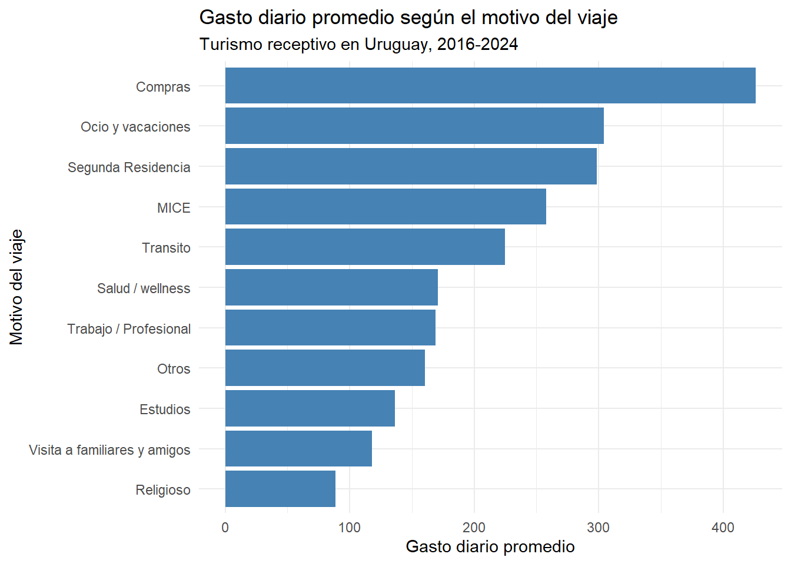
4.4 ¿Cómo evoluciona el gasto diario promedio por trimestre y por año?
En primer lugar, lo que se debió hacer fue extraer de cada observación, el año y el trimestre de la visita. Para esto, se crearon dos nuevas variables: Año y Trimestre.
df_evolucion_gasto <- df1 %>%
transmute(
FechaIngreso,
GastoTotal,
Estadia,
GastoDiario = GastoTotal / Estadia,
Año = year(FechaIngreso),
Trimestre = quarter(FechaIngreso)
)
df_evolucion_gasto# A tibble: 65,333 × 6
FechaIngreso GastoTotal Estadia GastoDiario Año Trimestre
<dttm> <dbl> <dbl> <dbl> <dbl> <int>
1 2017-02-22 00:00:00 3213 9 357 2017 1
2 2017-01-05 00:00:00 2016 4 504 2017 1
3 2017-01-04 00:00:00 3846 8 481. 2017 1
4 2017-01-18 00:00:00 3696 8 462 2017 1
5 2017-01-02 00:00:00 6686 15 446. 2017 1
6 2017-01-09 00:00:00 290. 2 145. 2017 1
7 2017-01-20 00:00:00 1922 7 275. 2017 1
8 2017-01-14 00:00:00 700 2 350 2017 1
9 2017-01-20 00:00:00 2156 6 359. 2017 1
10 2017-01-26 00:00:00 1384 4 346 2017 1
# ℹ 65,323 more rowsEn primer lugar, se calculó el promedio de gasto diario por persona por año. Para esto agrupamos las observaciones por año y creamos la variable “gasto_promedio_diario”.
gasto_anual <- df_evolucion_gasto %>%
group_by(Año) %>%
summarise(
observaciones = n(),
gasto_promedio_diario = mean(GastoDiario))
gasto_anual# A tibble: 10 × 3
Año observaciones gasto_promedio_diario
<dbl> <int> <dbl>
1 2011 1 313.
2 2016 383 354.
3 2017 14284 247.
4 2018 10565 254.
5 2019 10944 247.
6 2020 2685 246.
7 2021 183 228.
8 2022 6136 230.
9 2023 11305 220.
10 2024 8847 227.Podemos observar que tanto las observaciones (cantidad de personas que visitaron al país por año) como el gasto promedio diario varía bastante entre períodos. En cuanto al gasto, se observa una tendencia general descendente, con algunas fluctuaciones. En 2016 se registra el valor más elevado, con un gasto promedio diario de USD 353,85, mientras que en 2024 se observa un gasto de USD 226 por persona. Entre medio, los valores fluctúan, pero la tendencia general es a la baja. En cuanto a la cantidad de observaciones (visitantes por año) hay grandes diferencias: en 2016 se registran 383 observaciones, pero esto se puede explicar porque las observaciones correspondientes a este año abarcan únicamente el último trimestre. Entre 2017 y 2019 las observaciones son similares, pero entre 2020 y 2021 los números son mucho más bajos, debido a que el turismo fue absolutamente golpeado por la pandemia mundial. A partir de 2022 se denota una leve recuperación.
Para analizar el gasto por trimestre se procedió de la misma manera:
#Gasto por trimestre
gasto_trimestre <- df_evolucion_gasto %>%
group_by(Año, Trimestre) %>%
summarise(
observaciones = n(),
gasto_promedio_diario = mean(GastoDiario))`summarise()` has regrouped the output.
ℹ Summaries were computed grouped by Año and Trimestre.
ℹ Output is grouped by Año.
ℹ Use `summarise(.groups = "drop_last")` to silence this message.
ℹ Use `summarise(.by = c(Año, Trimestre))` for per-operation grouping
(`?dplyr::dplyr_by`) instead.gasto_trimestre# A tibble: 27 × 4
# Groups: Año [10]
Año Trimestre observaciones gasto_promedio_diario
<dbl> <int> <int> <dbl>
1 2011 4 1 313.
2 2016 4 383 354.
3 2017 1 5102 267.
4 2017 2 2615 224.
5 2017 3 2885 221.
6 2017 4 3682 254.
7 2018 1 3530 274.
8 2018 2 2047 233.
9 2018 3 2209 240.
10 2018 4 2779 255.
# ℹ 17 more rowsEn cuanto al gasto, se observa un patrón bastante claro: el gasto promedio suele ser más alto en el primer trimestre y en el cuarto, y más bajo en el segundo y tercer trimestre. Esto puede asociarse a la temporada dalta de verano, donde los turistas tienen mayor disposición a pagar y se concentran en destinos y actividades turísticas de mayor valor. Si observamos
Aplicación Shiny
Una vez que realizado el análisis exploratorio, se desarrolló una apliacación Shiny que permite comunicar de forma interactiva los aspectos más relevantes del análisis exploratorio.
Antes de comenzar con la aplicación, se debió guardar el dataset final df1 para así usar el mismo proyecto con las variables creadas y transformaciones realizadas:
saveRDS(df1, "df1.rds")A través de la aplicación Shiny se buscó interpretar las diversas características de los visitantes de Uruguay analizadas en las secciones anteriores. La aplicación fue desarrollada con el objetico de facilitar la exploración interactiva del conjunto de datos trabajado, que los usuarios puedan acceder a la información analizada de forma atractiva e interactiva, logrando comunicar lo explorado de manera interesante para el lector.
A diferencia del informe, que presenta resultados estáticos, la aplicación permite al usuario analizar dinámicamente las principales características de los visitantes, sus viajes, la duración de las estadías y los gastos turísticos mediante distintos filtros y visualizaciones.
En cuanto al diseño de la aplicación, la misma está estructurada en cuatro pestañas, cada una aborda una dimensión distinta del análisis. En la primera trata acerca de las características de los visitantes, la segunda sobre las características de los viajes, la tercera sobre la duración de la estadía y la cuarte acerca de los gastos turísticos. Los nombres de las distintas pestañas son: “Origen y estacionalidad”, “Motivo y destino”, “Estadía” y por último “Gasto”.
En la parte superior se presentan indicadores resumen y, posteriormente, distintos gráficos que sintetizan la información correspondiente a cada temática que se actualizan automáticamente según los filtros seleccionados por el usuario. Los filtros interactivos se presentan en la parte izquierda de la aplicación y hay cuatro filtros posibles: el Año, el país o región de residencia, motivos del viaje y el destino. En este sentido, los filtros permiten al usuario explorar distintos perfiles de visitantes y comparar cómo varían las características del turismo receptivo según el período, el origen de los visitantes, el motivo del viaje y el destino elegido.
La aplicación complementa el análisis exploratorio realizado en el informe al permitir una exploración dinámica de los datos sin necesidad de modificar el código. Al ser interactivo, permite a los usuarios filtrar los datos en base a su conveniencia, permitiendo decidir y observar desde aspectos más generales hasta aspectos más particulares. A su vez, facilita la identificación de patrones y diferencias entre distintos grupos de visitantes, mejorando la comunicación e interpretación de los principales resultados obtenidos.
La aplicación se puede visualizar mediante el siguiente enlace: http://127.0.0.1:4601
Comentarios finales
Una vez realizado el análisis exploratorio y desarrollado la aplicación, fue posible analizar las distintas caracerísticas de los visitantes del país durante el período 2016-2024 y analizar sus gastos y diversas características del viaje como los destinos elegidos.
Como fue mencionado previamente, la mayoría de lso visitantes provienen de América del Sur y Central, sobretodo de Argentina y viajan principalmente por ocio y vacaciones aunque un gran número ingresa al país para visitar a familiares y amigos. En los meses de Diciembre, Enero y Febrero, el flujo de visitantes es mayor y el resto del año es más constante. Por otra parte, la estadía promedio varía dependiendo del destino y aún más dependiendo del motivo. Los visitantes cuyo destino es Punta del Este permanecen en el país por un período mayor mientras que los que van a Colonia o el Litoral Termal permanecen menos días en el país. En la misma línea, aquellas personas que ingrean al país por Estudios son quienes permanecen más días en Uruguay con un promedio de 17 días, mientras que aquellos que ingresan por compras y tránsito se quedan en promedio un período menor.
En cuanto al gasto, el promedio diario es de USD 240, pero ciertos rubros concentran una parte mayor del mismo. Casi un 60% del gasto se reparte entre alojamiento (32%) y alimentación (27,4%). Por otra parte, el gasto diario también varía notoriamente dependiendo del destino y motivo del viaje, donde los viajes por motivo de Compras tiene un gasto mayor que el resto. Como se mencionó, la variación de presupuestos entre destinos es sustancial: mientras en Punta del Este el gasto promedio diario por día es de 427 dólares, en la Costa de Oro es de 147.
A su vez, al procesar los datos de la base de datos elegida, la información obtenida puede ser de utilidad para economistas y creadores de proyectos o políticas públicas así como también para que emprendedores puedan analizar en qué lugares, y diversos aspectos es conveniente invertir a la hora de considerar el turismo. Una posible línea de trabajo futura podría ser incorporar modelos predictivos que permitan predecir variables de interés como el gasto esperado futuro de los visitantes. También se podría incorporar información complementaria de otras fuentes de datos como indicadores económicos, tipo de cambio o inflación que puedan influir en el flujo de los visitantes y sus patrones de gasto.
A modo de cierre, el grupo considera que este trabajo fue de gran utilidad dado que nos permitió incorporar los distintos conocimientos aprendidos en el curso y aplicarlos en un análisis exploratorio donde debimos enfrentarnos a diversos desafíos.